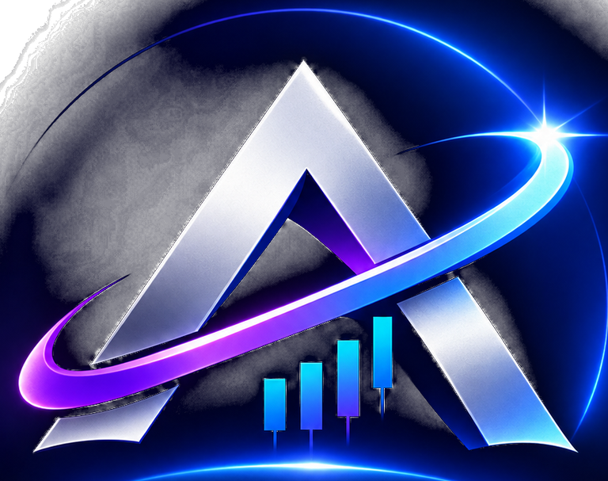

SURVEILLANCE
Marchés à suivre
Les prix instantanés ne sont affichés que lorsqu'une source vérifiée les fournit. Ouvrez les graphiques pour consulter les cotations du fournisseur.

AUREVIA COPILOTANALYSE · STRATÉGIE · PERFORMANCEVotre cockpit pour surveiller les marchés et préparer vos décisions.
Les prix instantanés ne sont affichés que lorsqu'une source vérifiée les fournit. Ouvrez les graphiques pour consulter les cotations du fournisseur.
Aucun signal n'est confirmé actuellement. AUREVIA privilégie l'attente lorsque les données ou confirmations sont insuffisantes.
Cotations, graphiques, analyse technique, DXY, macroéconomie et actualités réunis dans cet espace.
Renseignez votre lecture du marché. AUREVIA conserve votre scénario séparément et le confronte à son état d’analyse indépendant, sans chercher à vous donner automatiquement raison.
Votre scénario n’a pas encore été enregistré.
L’analyse indépendante s’appuiera sur les données réellement disponibles pour l’instrument sélectionné. Le graphique TradingView affiché dans cette page n’est pas automatiquement lu par le moteur.
| Unité | EMA 200 | RSI 14 | Structure |
|---|---|---|---|
| Sélectionnez un instrument pour commencer. | |||
Le DXY mesure la force du dollar face à un panier de devises. Son influence varie selon l’actif et le contexte ; une corrélation inverse avec l’or n’est jamais garantie.
Les événements économiques et publications susceptibles d’influencer les marchés apparaîtront ici via le fournisseur externe.
Vérifiez toujours l'heure locale, la devise concernée, l'impact et les chiffres réels avant toute décision.
Les figures et zones sont descriptives. Un sweep, une figure chartiste ou un Order Block isolé ne constitue jamais un signal d’entrée.
Définissez d’abord le montant maximal que vous acceptez de risquer. Le solde sert uniquement à afficher la part du capital exposée.
Renseignez la valeur monétaire par lot et par unité de prix selon la fiche contrat de votre broker. AUREVIA ne devine pas les tailles de contrat, devises de conversion ou marges.
| Date | Instrument | Direction | Résultat | Note | Action |
|---|---|---|---|---|---|
| Aucun trade enregistré. | |||||
| Instrument | Mode | Direction | TP / Volume | Résultat réalisé | Statut |
|---|---|---|---|---|---|
| Aucune fiche liée. | |||||
Connectez-vous à votre compte AUREVIA, générez un code puis envoyez /start CODE au bot officiel.
Le bot associe uniquement le compte authentifié à votre conversation privée.
Le test sera disponible après association du compte Telegram.
AUREVIA envoie les analyses (y compris WAIT), les signaux validés, les trades enregistrés, les TP/SL détectés et les clôtures vers votre compte Telegram privé.
AUREVIA est un copilote d'analyse et de préparation. Il ne passe aucun ordre, ne détient aucun identifiant broker et ne remplace pas votre vérification personnelle.
Enregistrez vos positions et clôtures réelles. AUREVIA ne transmet aucun ordre au broker.
Position unique : le lot saisi est réparti entre les TP sélectionnés.
| Instrument | Mode | Direction | TP | Lot initial | Restant | Résultat réalisé | Statut | Action |
|---|---|---|---|---|---|---|---|---|
| Aucune position enregistrée. | ||||||||
Suivez la force du dollar et son contexte avec l'or, les devises et les actifs sensibles aux taux.
Une corrélation observée n'est pas une causalité. Le DXY ne suffit pas à déclencher une position XAU/USD.
Les annonces majeures peuvent provoquer volatilité, spread élargi et slippage.
Le calendrier détaillé doit provenir d'une source autorisée et datée. Aucun chiffre ni horaire fictif n'est affiché.
Votre espace d’analyse et de suivi sécurisé
Inscription et connexion sécurisées avec votre compte Google.
Lors de votre première connexion, votre compte AUREVIA est créé automatiquement.
Connectez-vous pour accéder à votre espace personnel.
Préférences d'affichage et état des connexions de votre espace.
Ajoutez l’application à votre écran d’accueil pour l’ouvrir comme une application.
Sur iPhone : ouvrez le menu Partager de Safari puis choisissez « Sur l’écran d’accueil ».
Les préférences locales sont enregistrées sur cet appareil. Les identifiants API ne sont jamais demandés ici.
Comprendre les analyses, gérer le risque et interpréter les limites du copilote.
AUREVIA peut être ajoutée à votre appareil comme une application. Le site doit être ouvert en HTTPS.
Si l’option n’apparaît pas, vérifiez que vous utilisez un navigateur compatible et que le site est chargé en HTTPS. Aucune clé API n’est à saisir pour installer l’application.
Console privée. Chaque lecture et action sensible est autorisée côté serveur et tracée dans l’audit.
Les états des services indiquent la configuration des secrets côté serveur ; ils ne constituent pas un test transactionnel de chaque fournisseur.
| Utilisateur / e-mail | Inscription | Dernière connexion | Dernière activité | Connexion | Rôle | Actions |
|---|---|---|---|---|---|---|
| Chargement… | ||||||
Recherche serveur sur les comptes enregistrés. Statut en ligne calculé depuis le heartbeat (90 secondes) ; session active jusqu’à 2 minutes.
| Annonce | Catégorie | Publication | Expiration | Action |
|---|---|---|---|---|
| Aucune annonce. | ||||
| Date | Action | Administrateur | Utilisateur cible | Détails |
|---|---|---|---|---|
| Aucune action enregistrée. | ||||
Les 100 actions les plus récentes sont affichées. Le journal est privé et non accessible aux comptes utilisateurs.